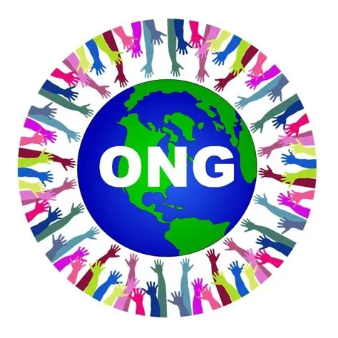
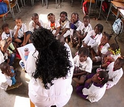

Nossa Missão
A ConectaONG tem como missão conectar pessoas e recursos para fortalecer organizações não governamentais (ONGs) e promover o desenvolvimento social.
Nossos Projetos
Conheça alguns dos nossos principais projetos em andamento:

Projeto Esperança Animal
Iniciativa dedicada à proteção e adoção de animais abandonados, promovendo o cuidado e a conscientização.
Saiba mais

Educar para Transformar
Projeto que oferece oficinas educativas e culturais para crianças em situação de vulnerabilidade.
Saiba maisVerde Vidas
Ação voltada para o plantio de árvores e preservação de áreas verdes urbanas.
Saiba maisFale conosco!
Endereço: Rua Arthur Leal de Almeida, 71 - Bairro: Boiçucanga/SP
Telefone: (12) 997392984
E-mail: contato@conectaong.org